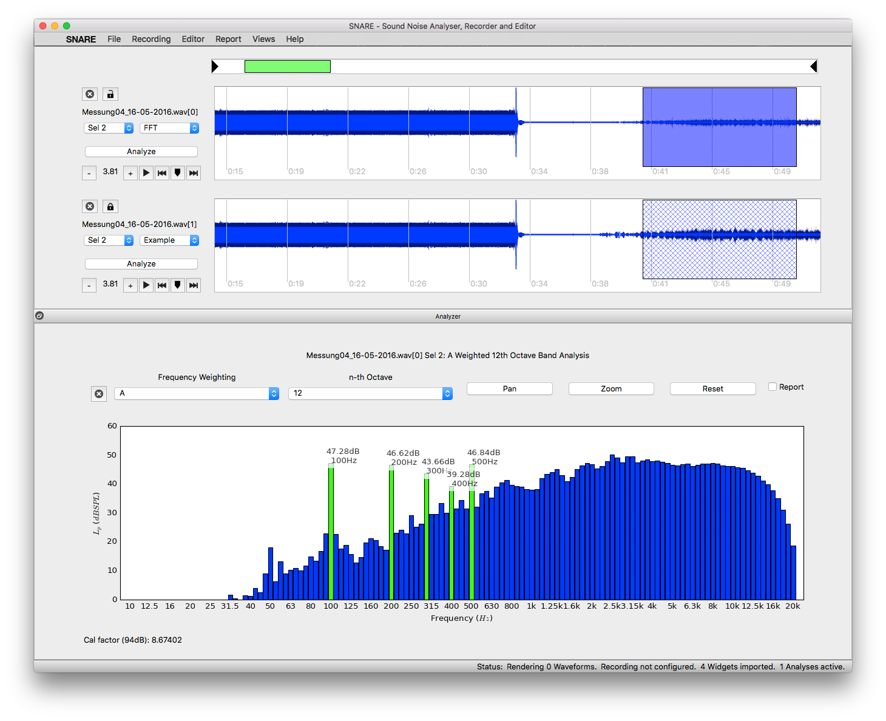

Welcome to the SNARE Project.
Sound Noise Analyzer Recorder Editor is a flexible, cross-platform and modular Analyze Tool. It distinguishes from other analyze tools through its block structure file handling, which enables the handling of long multichannel recordings and files. It is implemented in Python, and in contrast to most analyze tools it is open source and cross-platform. The program offers as input to record multichannel or open existing (multichannel) WAV files. The channels can then be selected and analyzed with the already implemented analysis types: Fast Fourier Transform plot (3th, 6th, 12th and 24th octave bar), Sound Pressure Level plot, Histogram (probability of pressures with cumulative sum). The good thing: It's completly easy to write your own analyse widget! For more information follow the create your own Analyse Widget section of the documentation.
Authors
This project was initiated for a bachelor thesis at the Signal Processing and Speech Communication Laboratory at University of Technology Graz originally focused on analyzing audible noise from high voltage power lines, especially the corona discharge noise. But soon the project extended to an generic analyze tool. It was coded 2016 by Philipp Merz and Malte Merdes (@snare1).

Contact
If you have questions don't hesitate to ask us!